Modo servidorServer mode
Un Tramtai del sistema que arranca con el equipo, sin iniciar sesión, y se abre desde otros equipos por HTTPS.A system-wide Tramtai that starts with the computer, with nobody signed in, and opens from other computers over HTTPS.
Paso a pasoStep by step
- Instálalo como administrador: «sudo ./tramtai servidor instalar» desde el .tar.gz de Linux, «sudo tramtai-servidor instalar» tras el .deb o el .rpm, o en una consola de administrador en Windows.Install it as administrator: “sudo ./tramtai server install” from the Linux .tar.gz, “sudo tramtai-servidor install” after the .deb or .rpm, or in an administrator console on Windows.
- Pon la contraseña del administrador con «tramtai-servidor administrador contraseña»: sin ella no se entra desde otros equipos. El TOTP, con «… administrador totp activar».Set the administrator password with “tramtai-servidor admin password”: without it, nobody signs in from other computers. TOTP, with “… admin totp enable”.
- Ábrelo a la red solo con HTTPS: detrás de un proxy (lo recomendado), con tu certificado o con Let’s Encrypt. La guía del servidor trae un ejemplo por proxy.Open it to the network over HTTPS only: behind a proxy (recommended), with your own certificate or with Let’s Encrypt. The server guide has an example per proxy.
- Guarda las claves de los agentes en el servidor con «tramtai-servidor claves guardar <NOMBRE>»: nunca desde la Web UI.Store the agents’ keys on the server with “tramtai-servidor keys set <NAME>”: never from the Web UI.
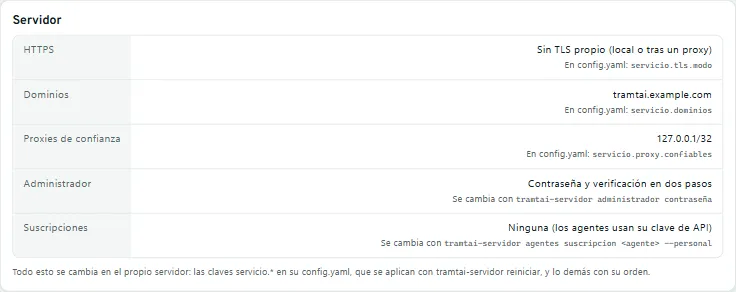
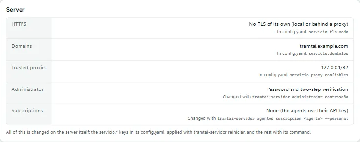
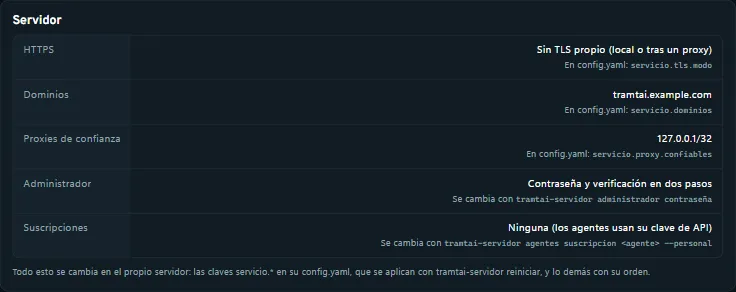
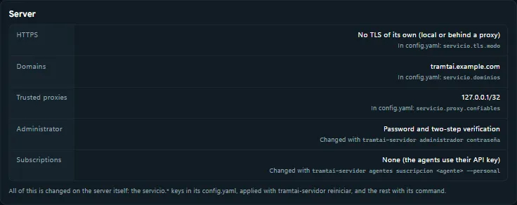
Lo administras en el propio servidor con «tramtai-servidor <orden>» (con sudo en Linux). No tapa el tramtai de tu usuario, que es otro entorno.You manage it on the server itself with “tramtai-servidor <command>” (with sudo on Linux). It doesn’t hide your user’s tramtai, which is another environment.
AvisoNotice
- Tu cuenta con un proveedor puede limitarse, suspenderse o cerrarse si usas tu suscripción con Tramtai, y el proveedor puede cambiar sus reglas sin avisar. El autor no puede recuperarla.Your account with a provider may be limited, suspended or closed if you use your subscription with Tramtai, and the provider may change its rules without notice. The author cannot recover it.
- Las condiciones de Tramtai (TOTP, una petición a la vez) bajan el riesgo, pero no lo quitan ni son una opinión legal sobre los términos del proveedor.Tramtai’s conditions (TOTP, one request at a time) lower the risk but do not remove it, and they are not a legal opinion on the provider’s terms.
- Lo que abres a la red es responsabilidad tuya: HTTPS, cortafuegos, contraseñas, copias y actualizaciones.What you open to the network is your responsibility: HTTPS, firewall, passwords, backups and updates.
- Si otras personas usan tu servidor, tú respondes de sus datos ante la ley que te aplique.If other people use your server, you answer for their data under the law that applies to you.
- Tramtai es gratuito y se entrega tal cual, sin garantías.Tramtai is free and provided as is, without warranties.
El texto completo de los términos: «tramtai-servidor terminos», o el enlace de Acerca de Tramtai.The full terms: “tramtai-servidor terms”, or the link in About Tramtai.
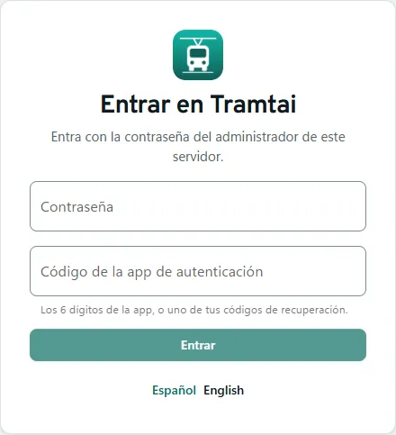
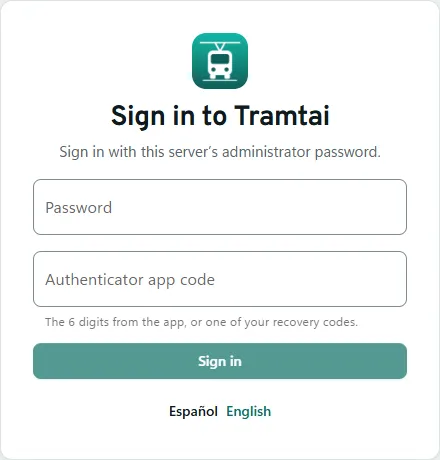
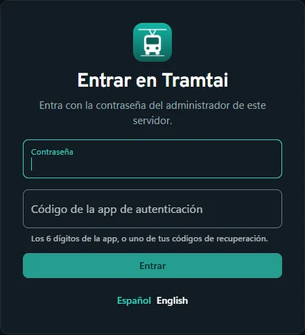
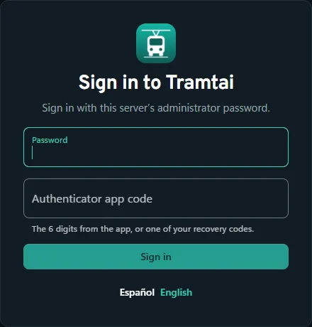
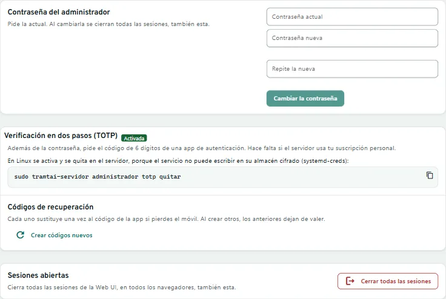
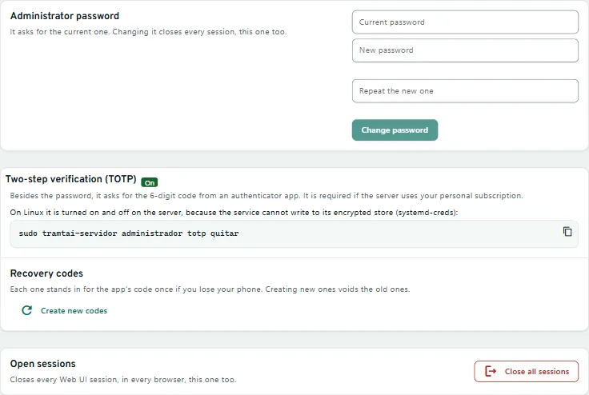
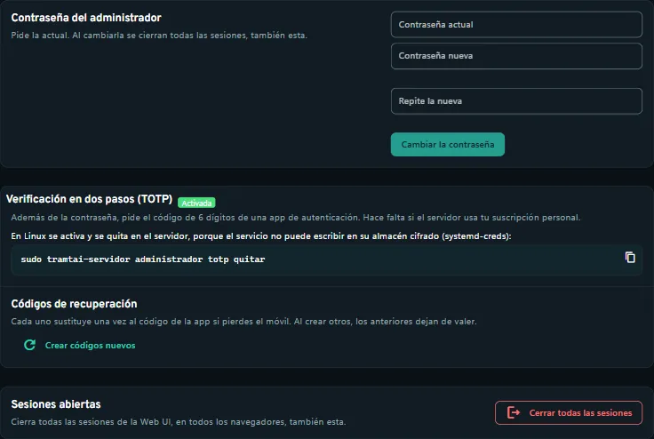
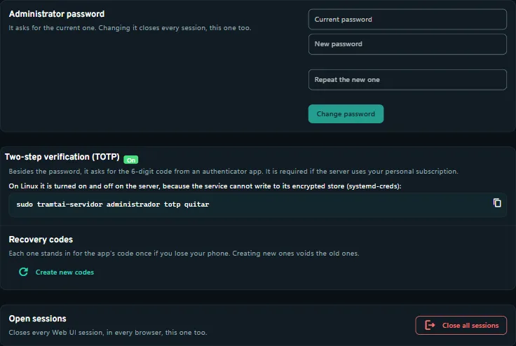
PreguntasQuestions
¿Qué es el modo servidor?What is server mode?
Un Tramtai del sistema, aparte del tuyo: arranca con el equipo, sin sesión, con su cuenta, sus datos y su puerto. En Linux con systemd y en Windows Server; en macOS, no.A system-wide Tramtai, separate from yours: it starts with the computer, without a session, with its own account, data and port. On Linux with systemd and on Windows Server; not on macOS. Dos entornosTwo environments →
¿Por qué no arranca con permitir_remoto por HTTP?Why won’t it start with permitir_remoto over HTTP?
Porque las claves y la contraseña viajarían sin cifrar. Fuera de este equipo, solo con HTTPS: un proxy, tu certificado (servicio.tls.modo: archivos) o Let’s Encrypt.Because the keys and the password would travel unencrypted. Outside this computer, HTTPS only: a proxy, your certificate (servicio.tls.modo: archivos) or Let’s Encrypt.
¿Qué proxy uso?Which proxy do I use?
El que ya tengas: la guía trae Caddy, nginx, Apache, Traefik, HAProxy e IIS. Pon su dirección en servicio.proxy.confiables y tu dominio en servicio.dominios.The one you already have: the guide covers Caddy, nginx, Apache, Traefik, HAProxy and IIS. Put its address in servicio.proxy.confiables and your domain in servicio.dominios.
¿Y desde el propio servidor?And from the server itself?
«tramtai-servidor abrir», la tecla W y la app entran por la entrada local. Con proxies de confianza, abrir a mano el puerto público en el servidor cuenta como entrar desde fuera.“tramtai-servidor abrir”, the W key and the app come in through the local entrance. With trusted proxies, opening the public port by hand on the server counts as coming from outside.
¿Dónde quedan las claves de los agentes?Where do the agents’ keys go?
Cifradas: en Windows, en el almacén de la cuenta del servicio; en Linux, con systemd-creds. La clave del servicio, con el servidor abierto a la red, solo vale desde el propio equipo.Encrypted: on Windows, in the service account’s store; on Linux, with systemd-creds. The service key, with the server open to the network, only works from the server itself.
¿Quién ejecuta los agentes?Who runs the agents?
El servicio, con su cuenta. Se rechazan «sudo tramtai-servidor agentes» a secas (el diagnóstico), «ejecutar» sin el servicio y «servicio iniciar» en primer plano; «agentes entrar» sí vale.The service, with its account. Plain “sudo tramtai-servidor agents” (the diagnosis), “ejecutar” without the service and “servicio iniciar” in the foreground are refused; “agents login” works.
¿Puedo usar mi suscripción en el servidor?Can I use my subscription on the server?
Por defecto, clave de API. Abierto a la red, solo la suscripción personal: con TOTP, para ti y una petición a la vez por defecto (hasta 3 con suscripcion_simultaneas).By default, an API key. Open to the network, only the personal subscription: with TOTP, for you and one request at a time by default (up to 3 with suscripcion_simultaneas).
¿Qué riesgo tiene Codex en el servidor?What’s the risk with Codex on the server?
Lee lo que lee la cuenta del servicio, claves incluidas. Da la clave del espacio solo a gente de confianza y, en las APIs ajenas, pon Modelos permitidos y respaldo sin Codex (vacía, vale cualquiera).It reads what the service account reads, keys included. Give the workspace key only to people you trust and, in other people’s APIs, set Allowed models and fallback without Codex (empty allows any).
¿Cómo lo actualizo?How do I update it?
«tramtai-servidor actualizar» comprueba la firma, deja terminar las peticiones y cambia el programa. Si lo instalaste con el .deb o el .rpm, actualiza con apt o dnf.“tramtai-servidor update” checks the signature, lets requests finish and swaps the program. If you installed it with the .deb or .rpm, update with apt or dnf.
¿Cómo lo quito?How do I remove it?
«tramtai-servidor desinstalar» quita el servicio y el programa y conserva los datos; con «--borrar-datos» borra también los datos, las claves y la cuenta.“tramtai-servidor uninstall” removes the service and the program and keeps the data; with “--delete-data” it also deletes the data, the keys and the account.
En la terminal: «tramtai-servidor» abre la del servidor, con la marca «Servidor». W abre su Web UI, y en Ajustes (7) están Servidor y Seguridad.In the terminal: “tramtai-servidor” opens the server’s, with the “Server” badge. W opens its Web UI, and Settings (7) has Server and Security.